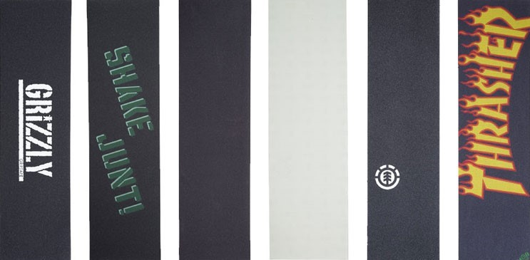

HOW TO SET IT UP
A Beginners Guide to Master
The Art Of Skateboard Building:
Decks:
This is your board. Decks are typically made out of plywood and sometimes composites or fiberglass. The more layers of wood it has the stronger of a deck it will be. The average sizes are 7.25, 7.5, 7.75, 8, 8.25, 8.38, 8.5, 8.6, and 9. Different brands also have different styles of concaves as well as different tails. The more concave a board has the harder it will flick. Some decks have twin tails meaning both sides of the deck are the same. Some decks have odd shapes to them which are typically cruiser style or decks you ride in bowls/vert style skating.

Grip Tape:
Grip tape is the material you put on top of your board. This material is typically made out of sand paper. Depending on the brand, some grip will be a lot more coarse than other brands. Once you've skated a couple different brands you will get a feel for what coarse grip you like skating.